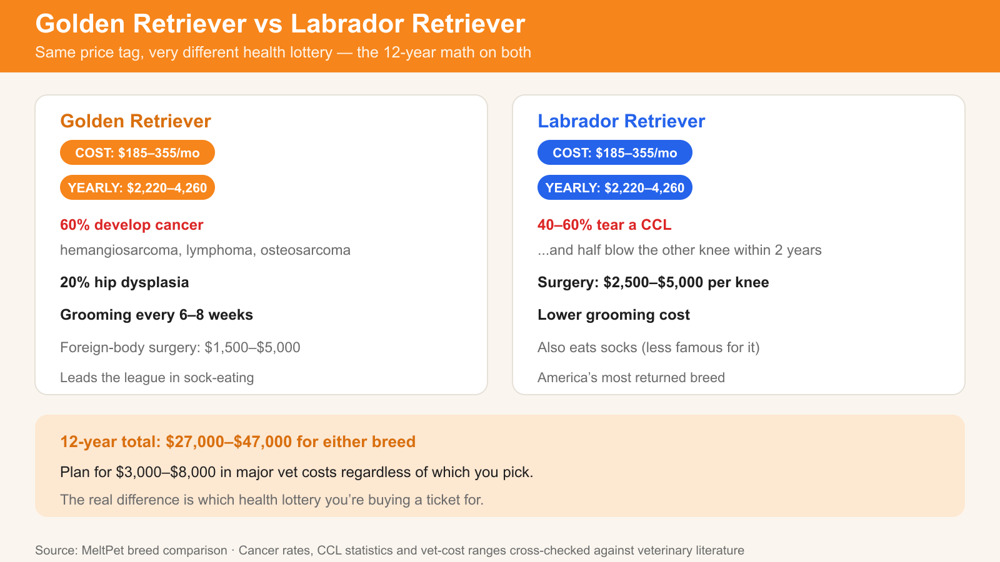

They look the same to your mother-in-law. Your dog will know the difference. So should you. | 2026-07-26 · MeltPet · 8 min read
Last updated: 2026-07-26
People Ask Me "Golden or Lab?" Like It's a Trivia Question. It's Not.
Golden Retrievers and Labrador Retrievers cost nearly the same to own ($185–$325 per month, or $2,220–$3,900 per year for either breed) — but they diverge sharply on health risk: roughly 60% of Golden Retrievers develop cancer, while 40–60% of Labs tear a CCL knee ligament (each repair costs $2,500–$5,000). Over a 12-year lifespan both breeds run $27,000–$47,000 in routine care, so the real decision isn't cost — it's which health lottery and which temperament you're signing up for.
I've spent enough time around both breeds to know that asking "which is better" is the wrong question. They're both retrievers. They're both friendly, trainable, medium-to-large family dogs with floppy ears and an enthusiasm for water that borders on the pathological. To someone who doesn't know dogs, they're interchangeable — the two yellow-ish breeds on the dog food bag.
But the gap between a Golden Retriever and a Labrador Retriever is real, and it matters most in the moments you don't see on a breeder's website: the third time your Lab puppy counter-surfs a rotisserie chicken. The sixth month of Golden fur tumbleweeds rolling across your living room floor. The emergency vet visit when your Lab eats a sock. The way a Golden looks at you when you raise your voice — like you've personally betrayed them.
This isn't a "which is better" article. It's a "which is better for you" article. The difference matters.
🔍 At a Glance — Same Family, Different Dogs
Temperament: Soft vs. Tough. Gentle vs. Resilient.
The biggest functional difference between these two breeds isn't visible in photos. It's psychological.
The Golden Retriever is a soft dog. Soft mouth, soft personality, soft heart. They read your emotions with almost uncomfortable accuracy — a Golden knows you're upset before you've fully registered it yourself. They're desperate to please and genuinely distressed by anger. Correct a Golden harshly and they don't just stop the behavior; they shut down. They take it personally. This sensitivity makes them extraordinary therapy dogs and terrible candidates for households where people yell. A Golden raised in a calm, positive household is one of the most emotionally attuned creatures on earth. A Golden in a tense, loud household wilts.
The Labrador Retriever is a tougher dog. Not aggressive — Labs are famously docile — but resilient in a way Goldens aren't. A Lab bounces back from a scolding in 30 seconds. A Lab doesn't read your bad mood as a personal failure; they read it as "human is weird today, I'll go chew my bone." This resilience makes Labs better fits for chaotic households — big families, lots of kids, lots of noise, lots of activity. The Lab rides the chaos like a cork on waves. The Golden absorbs it.
🎭 Temperament Spectrum — Where Each Breed Lands
The practical consequence: a Golden thrives on gentle guidance and withers under frustration. A Lab needs firm consistency — not harshness, but clear boundaries enforced every time. The Golden forgives you for being an inconsistent trainer. The Lab exploits it.
The Puppy Phase Nobody Warns You About
Both breeds are challenging puppies. But the duration and intensity differ meaningfully, and this is where most first-time retriever owners get surprised.
The Labrador puppy is harder for longer. Labs don't mentally mature until age three or four. For three years, you have a 55-to-80-pound animal with a puppy brain — mouthy, impulsive, physically powerful, and genetically programmed to put everything in its mouth. The Lab puppy arc: adorable potato (8–16 weeks) → land shark (4–8 months, biting everything) → velociraptor (8–18 months, adult body, puppy brain, counter-surfing champion) → gradual improvement (18–36 months) → the dog you wanted (3+ years). Many people give up in the velociraptor phase. Shelters are full of 1-to-2-year-old Labs whose owners didn't know the phase lasted that long.
The Golden Retriever puppy is intense but shorter. Goldens mature earlier — the wild puppy phase usually lasts until about age two, and they settle noticeably in their third year. They're mouthy as puppies but gentler about it. They're energetic but less destructively so. The Golden is more biddable from day one — a 12-week-old Golden wants to figure out what pleases you. A 12-week-old Lab wants to figure out what fits in its mouth.
⏳ Puppy Difficulty Timeline — First 36 Months
Exercise: Both Need It. One Needs It More.
Both breeds need at least 60 minutes of daily exercise. The difference is in how they handle a missed day — and where their drive comes from.
The Golden needs exercise but has an off-switch. Miss a rainy day and the Golden is restless but manageable — an extra chew, a puzzle toy, some indoor fetch, and they'll cope. They're retrievers by instinct, but that instinct is channeled through partnership with you. A Golden retrieves because you want them to.
The Labrador needs exercise and doesn't have a reliable off-switch until maturity. A Lab who misses exercise is a problem — pacing, whining, counter-surfing, chewing, digging. The retrieving drive in a Lab is not a trained behavior. It's a biological imperative. A Lab retrieves because every cell in its body is screaming RETRIEVE. Deprive a Lab of retrieval — real, running, ball-flying, swimming retrieval — and that energy re-routes into something destructive.
Swimming: Both breeds are natural water dogs. Labs are stronger swimmers with a thicker, more buoyant double-coat. Goldens swim beautifully too, but their feathered coat gets heavy when wet and they tire faster in cold water. If your exercise plan is "swim the dog in the lake," Lab has the edge. If your plan is "walk, fetch in the yard, weekend hikes," both work equally well.
Monthly Cost: Nearly Identical. Lifetime Cost: Diverges by Health.
The day-to-day costs of owning a Golden and a Lab are close enough that money shouldn't be the deciding factor. Both run $150–$325/month for food, routine vet care, flea/tick/heartworm prevention, insurance, and supplies. The difference shows up in the health column — specifically, where the big veterinary expenses tend to land.
Category
Golden Retriever (Monthly)
Labrador Retriever (Monthly)
Food (premium large-breed)
$50–$100
$55–$110
Treats & chews
$15–$35
$15–$35
Routine vet + prevention
$50–$100
$50–$100
Pet insurance
$35–$50
$35–$50
Grooming (every 6–8 wks)
$20–$40
$10–$20
Toys, beds, misc.
$15–$30
$20–$40
Total Monthly
$185–$325
$185–$325
Yearly
$2,220–$3,900
$2,220–$3,900
Where the costs diverge: Goldens cost more in grooming (that feathered coat tangles and needs professional attention). Labs cost more in toy replacement — they destroy things faster, eat more things that aren't food, and lead the league in foreign-body surgeries ($1,500–$5,000 for a sock or corn cob). Over a 12-year lifespan, both breeds cost roughly $27,000–$47,000 in routine care, plus whatever emergencies the health lottery throws at you. Plan for $3,000–$8,000 in major veterinary costs regardless of which breed you pick. Pet insurance is not a luxury for either of these breeds.
Health: The Hardest Part of This Comparison
Both breeds have serious health vulnerabilities. The key difference is what kills them.
Goldens die of cancer. Approximately 60% of Golden Retrievers will develop cancer — hemangiosarcoma, lymphoma, osteosarcoma. This is the single most devastating statistic in canine health. The Morris Animal Foundation's Golden Retriever Lifetime Study is actively investigating why, but the numbers are what they are. A Golden from a breeder who tracks cancer in their lines — asking about grandparents, aunts, uncles, not just parents — is your best defense, but it's not a guarantee. Hip dysplasia affects about 20% of Goldens.
Labs die of mobility failure. Labs get cancer too, but at lower rates. The Lab's signature health crisis is orthopedic: hip dysplasia, elbow dysplasia, and cruciate ligament tears. A Lab who tears one CCL has a 40–60% chance of tearing the other within two years. Each repair costs $2,500–$5,000. Obesity compounds every orthopedic problem — and Labs are genetically prone to obesity (the POMC gene mutation means roughly 25% of Labs literally don't feel full). The biggest health decision for a Lab owner isn't which breeder. It's keeping the dog at a healthy weight — every extra pound increases joint stress and shortens lifespan.
🏥 Health Risk Profile — What Each Breed Is Vulnerable To

Same price tag, different health lottery — the 12-year math on both breeds.
Shedding: Different Kinds of Fur Apocalypse
Golden Retrievers have a long, feathered double coat. The fur is longer, lighter, and forms visible clumps — the classic "golden tumbleweeds" that roll across hard floors. It's easier to see and easier to pick up. Weekly brushing with an undercoat rake reduces the volume but doesn't eliminate it. During shedding season (spring and fall), you'll fill a trash bag per week with loose undercoat. Professional grooming every 6–8 weeks helps manage the feathering and prevents mats behind the ears and in the pants (rear leg feathers).
Labrador Retrievers have a shorter, denser double coat. The fur is coarser, heavier, and weaves itself into fabric — car upholstery, couch cushions, wool sweaters. It's less visible on the floor but harder to actually remove. A Lab's coat is lower-maintenance between professional grooms (no mats, no feathering to tangle), but the shedding volume is comparable. Bathing every 6–8 weeks with a deshedding treatment makes a real difference. A rubber curry brush used weekly pulls loose undercoat more effectively than a traditional brush on the short coat.
Winner (if you hate fur): Neither. Both are heavy shedders. If fur is a dealbreaker, look at a Poodle or a Portuguese Water Dog. Between the two, Goldens win on "ease of fur cleanup" — longer fur is easier to pick up. Labs win on "fur doesn't mat" — no detangling required.
The Bottom Line: Which One Is Actually Right for You?
Choose a Golden Retriever if:
You have young children and want a dog with near-infinite patience for ear-pulling and clumsy petting.
You want a dog that reads your emotions and responds to them — a genuine emotional companion, not just a pet.
You're a first-time dog owner. Golden Retrievers are more forgiving of training mistakes. They want to please you so badly they'll figure out what you meant even when you communicated it poorly.
You value gentle-mouthed interactions. Goldens can carry an egg without cracking it. They take treats like they're handling evidence at a crime scene.
You prefer a softer dog who settles indoors and saves the chaos for outside.
You're okay with a higher cancer risk in exchange for a dog whose default emotional state is "I love you and everything you do."
Choose a Labrador Retriever if:
You have an active, possibly chaotic household — older kids, lots of activity, noise, visitors. The Lab rides chaos like a surfboard.
You want a dog who's up for anything, anytime. Hike? Lake? Fetch marathon? The Lab says yes to all of it every time.
You're experienced enough with dogs to be consistent with training. Labs need boundaries enforced reliably, or they'll discover the loopholes.
You want a durable dog who bounces back from life's bumps — literally and emotionally.
You have access to water. A Lab in a lake is one of the purest forms of joy available on this planet.
You're okay with a dog who will eat things that aren't food and may require an emergency vet visit for a sock. Get insurance.
Either breed works beautifully if you: have a fenced yard or reliable access to off-leash space, can commit to 60+ minutes of daily exercise, don't mind fur on your furniture, are home enough that the dog isn't alone 10+ hours a day, and understand that the purchase price is the cheapest part of dog ownership. Both breeds will give you 10–14 years of extraordinary companionship. Neither will be the cheapest member of your household.
⚡ Quick Decision Cheat Sheet
You have toddlers → Golden
You have rowdy tweens → Lab
First-time dog owner → Golden
You live near water → Lab
You're a yeller → Neither. Get a Lab and work on anger management.
You're worried about cancer → Lab
You're worried about joint problems → Golden (and keep it lean)
You want a therapy dog → Golden
You want a hunting dog → Lab
You can't decide → Take the Dog Breed Finder. It'll give you an honest answer.
🤔 Common Questions About Golden vs Lab
Which is better with kids?
Both are in the top tier of family dogs. The edge depends on the age of your children. Goldens are gentler with babies and toddlers — they seem to instinctively understand fragility and moderate their movements accordingly. Labs are more durable playmates for school-age kids who want to wrestle, throw balls, and run around. If you have very young children, go Golden. If your kids are old enough to play hard, the Lab's physical resilience and endless energy match their pace. Regardless of which breed: never leave any dog unsupervised with any child. Basic rule. No exceptions.
Which is easier to train?
Goldens are easier for novice trainers because they're more sensitive, more focused, and more eager to please. They actively want to know what you want. Labs are highly trainable — they're in the top 10 for working intelligence — but they're more impulsive, more distractible, and more opportunistic. A Golden tries to get it right because pleasing you is intrinsically rewarding. A Lab tries to get it right because treats are extrinsically rewarding. The result is similar with good training. The journey is smoother with a Golden.
Which lives longer?
Both average 10–12 years. Goldens have a higher cancer burden that pulls the median down. Labs face orthopedic decline — many are euthanized at 10–12 because they can no longer walk comfortably. The single biggest factor for Golden lifespan is breeder selection (choose lines with documented longevity). The single biggest factor for Lab lifespan is weight management (keep the dog lean through its entire life).
Can I get a Golden-Lab mix instead?
Goldadors exist. They're popular. They're also a genetic dice roll — you might get the best of both breeds, or the Golden's cancer predisposition combined with the Lab's appetite and joint problems. Reputable breeders don't produce designer mixes, so finding a Goldador from health-tested parents is significantly harder than finding a well-bred purebred of either breed. If you want a Goldador, go through a rescue where you're giving an existing dog a home, not creating demand for one.
📚 Sources & References
Peer-reviewed research, breed club data, and veterinary school publications.
Morris Animal Foundation.Golden Retriever Lifetime Study — Preliminary Findings. morrisanimalfoundation.org
Kent, M.S., et al.Mortality in North American Golden Retrievers. UC Davis School of Veterinary Medicine.
Raffan, E., et al. (2016).A Deletion in the Canine POMC Gene Is Associated with Weight and Appetite in Obesity-Prone Labrador Retriever Dogs. Cell Metabolism, 23(5), 893–900.
Orthopedic Foundation for Animals (OFA).Golden Retriever and Labrador Retriever Breed Statistics. ofa.org
American Kennel Club (AKC).Breed Registration Statistics, 2015–2025. akc.org
Witsberger, T.H., et al. (2008).Prevalence of and risk factors for hip dysplasia and cranial cruciate ligament deficiency in dogs. JAVMA, 232(12), 1818–1824.